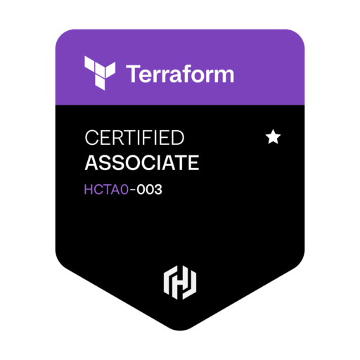

Certifications HashiCorp Certified - Terraform Associate (003) 2025-View Certificate  TOEIC® Listening and Reading test 2023-View Certificate Certified Kubernetes Administrator CKA 2021-View Certificate Certified Kubernetes Application Developer CKAD 2020-View Certificate Oracle Certified Associate, Java SE 8 Programmer 1Z0-808 2019-View Certificate